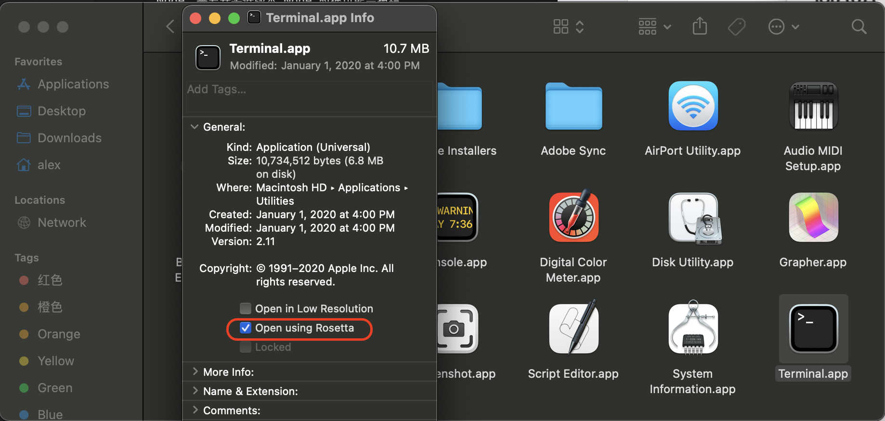

问题
Node 从 V15 版本才开始适配 M1 芯片，但是工作中可能要依赖 V14 及以下版本的 Node，需要安装低版本 Node 时很可能会报错
解决
方法一
1 | arch -x86_64 zsh |
通过这个命令可以让 shell 运行在 Rosetta2 下。
之后你可以通过 nvm install v14 来安装低版本 Node。
在此之后，您可以不用在 Rosetta2 中就可以使用安装的可执行文件，也就是说，您可以将 Node v15与其他节点版本互换使用。
1 | # 通过以下方式切换回 arm64 |
方法二
就是通过 Rosetta2 来启动终端，这样通过 Rosetta2 转译到 x86 架构中执行安装，也一样可以安装成功。
- 在 finder 中，点击应用程序，并在实用工具中找到终端 (Terminal)
- 右键终端，点击获取信息
- 选择 使用Rosetta 打开
- 重启终端，并执行
nvm install v14命令
